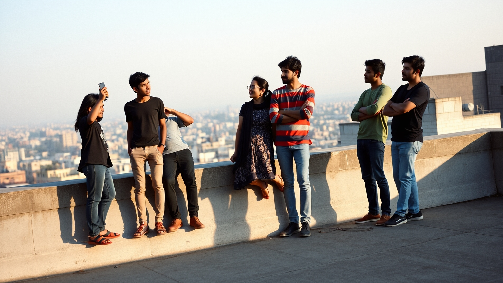

You have directed four hundred films already. All of them in your head.
This is the day one of them stops living there. You arrive knowing nobody. By seven that evening a room has watched your film with your name on it.
₹1,499 founding price · first two batches only
India makes more films than any country on earth. And no way in.
There are four ways to learn this in Hyderabad. Three are unavailable to a person with a job.
-
01
The instituteYou have neither
Several lakh rupees and four years of your life, starting now.
-
02
The one-off workshopNo film at the end
Teaches one fragment, ends on Sunday, and leaves you exactly where it found you.
-
03
The online courseStill in your tabs
Bought in a burst of resolve. Abandoned somewhere around lesson four.
-
04
Knowing somebodyThe actual wall
This is not a route. This is the problem wearing a route's clothes.
Five people. One wall. No door.
None of them is short of knowledge. Every one of them is short of the same four things.
-
24–35 · employed
The professional
Watches an enormous amount of cinema. Has meant to make something for six years. A film needs five other people and a deadline, and neither is for sale.
-
Trained · unseen
The actor
Needs footage to get cast and needs to get cast for footage. The showreel is a bathroom mirror and one wedding video.
-
Fourteen drafts deep
The writer
Writing is the only part of filmmaking you can do alone. It is also the part that needs everyone else.
-
Final year
The student
Graduates into a job in three months and can feel the window closing. Cannot afford an institute.
-
New to the city
The mover
Arrived for work. Knows nobody. The scene here runs entirely on who you already know, and they know nobody.
What they lack is not knowledge. It is a crew, a deadline, a room, and somebody to watch it.
None of those four is for sale anywhere in this city. So we sell exactly those four, packaged as one Saturday.

Nine blocks. You will not be sitting down for most of them.
We start at noon, because a person with a job has a Saturday and not a magic hour. Every duration below is real.
200
Metres. That is the whole map.The cafe, the terrace, the stairwell, the street outside. Nothing is shot beyond it.
It sounds like a limitation for about a minute. Then you realise it is the only reason your film gets finished by evening — nobody loses ninety minutes to traffic, and a small map forces you to write a real scene instead of a montage of establishing shots.
You are not buying a lesson. You are being handed four other people and a reason to hurry.
-
Team
Five of you, plus two actorsPlaced on the day
Most people arrive alone and are placed. Bring your own five if you have them — most people do not, which is the point.
-
Story
The theme is given. The script is yoursDecided by 2 PM
You write it, or you take the one we hand you. Both are normal. Nobody has ever been slowed down by a shortage of ideas — only by a shortage of a deadline.
-
Captain
Somebody who does this for a livingTwo films per captain
A resource person teaches the room. Your captain stays with your team from lunch to the screening, and takes two films — not six — so you actually get them.
-
Before
The materials, before you arriveMembers only
Members get the pre-course material, so nobody spends the first hour of a Saturday learning what a shot list is.
A film between two and five minutes long, with your name in the credits.
Not notes. Not a certificate. Not another course sitting in a tab. A thing that exists, that a room has already watched.
There are none yet.
The first batch has not run. Rather than fill this space with stock footage and invented titles, it stays empty until real films are sitting in it, made by people who had never made anything before. Yours could be one of them, which is a better offer than a testimonial.
It is a ladder, not a course.
Every level ends with a film that exists, and gives you a better person for longer. You only ever commit to the level you are on.
-
Step oneThe Weekend
One day, phones or laptops. A crew of five and a 2 to 5 minute film by the evening. Open to absolutely anyone.
₹1,499 -
Step twoThe Month
Four weekends. One captain attached to your team for the whole month. Real casting, a proper edit, published with full credits.
₹6,999 -
Step threeThe Intensive
Eight weekends. Real cameras, lights and sound, and a working professional with your team throughout.
₹19,999 -
Step fourThe Original
Get good enough and we produce your film ourselves. Real budget, real crew. You direct, we pay.
Selected, not sold
You already knew you wanted to make one. That was never the question.
The question was who would be in it with you, when you would do it, and whether anyone would watch. Those are the three we answer.
-
22Aug · Sat
₹1,499 founding
Mobile Filmmaking · Batch One
Banjara Hills · 12 noon to 7 PM · phones only, bring a charger
-
23Aug · Sun
₹1,499 founding
AI Filmmaking · Batch One
Madhapur · 12 noon to 7 PM · bring a laptop, tool credits included
Founding price holds for the first two batches and then it is ₹1,999 and stays there. We do not show a seat counter until seats are genuinely selling — you can smell a fake countdown as well as we can.
What to bring- A charged phone
- A charger
- Lunch money
- Shoes you can walk in
- No experience
Questions people actually ask.
I have never made anything. Is this for me?
Yes, and it is the whole point. The day is built for people with zero experience. If you have made films before you will still learn things, but you are not who we designed it for.
Do I need a camera?
No. Saturday is shot on phones, Sunday is made on laptops. If someone on your team owns a tripod or a clip mic, bring it. Nothing is required except a charger.
Do I have to bring a team?
No. Most people arrive alone and we place them in a team of five. If you want to bring your own five, you can do that too.
What if my film is bad?
It will be. So was everyone's, including the founder's, which is currently in a folder marked do not open. It exists, you finished it, and you now know exactly what you would fix. That last part is the whole education.
Who owns the film?
You do. Your film stays yours and your credits stay yours. We hold a permanent non-exclusive right to screen and promote it, which is how it reaches our screenings and our channel.
Is there a refund?
Full refund up to seven days before. After that the venue and the resource person are already paid, so we move you to the next batch instead.